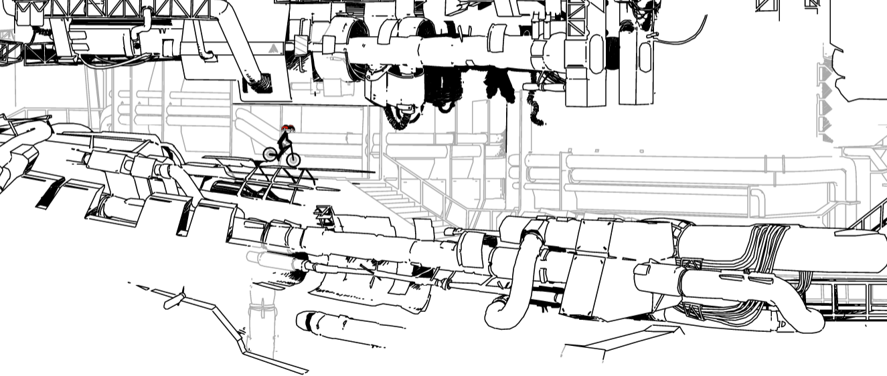
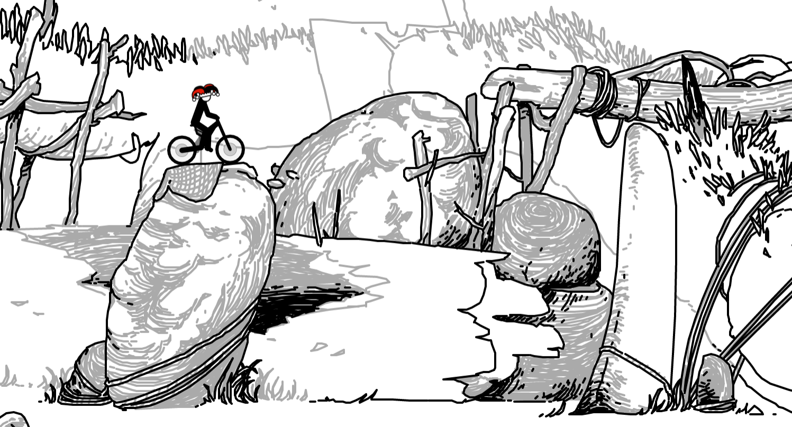
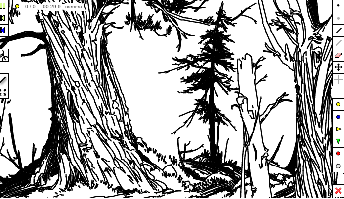
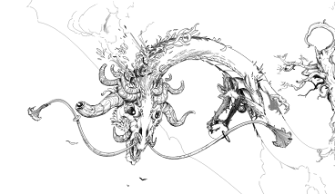

home / draw / play / news / misc
Maple
Maple's Gallery
Maple's Gallery
Aruarian Sandlands
...
Dry Grove Sanctuary
Primordial Sketchlands
Mawr Pathway 4
Burial Chambers
Vulcan

Dragonslayer

BLACK MAGIC
Past tracks
Decided to make my own gallery, as I have made a couple of tracks I would like to share with you all. These are just a few I feel are more timeless. Included some small descriptions/explanations of each.
>Omen
Track with trees, really tried experimenting with random combinations. Ultimately think it turned out positive, has a unique look. This is the first of an intended future project consisting of several more tracks following a common look.

Calamity
Within the Eye of The Storm

A on and off project, not quite what I envisioned but I decided to upload it anyways. Might pick up the theme/ideas of this track later in the future and make it even greater.
Vulcan Genesis
Mecha Construction
Made for round 2 of the 3rd Remix Contest, spent the first week planning out how to blend the track with the theme. Sketched a bunch of random gears and tech beforehand to give myself an idea of what I'd be going for. 2nd week drew key shapes and lastly the third week was just detailing, making everything(mostly shapes) more complex along with adding shadows.
Wrath
Sea Deity's Wrath
Mere mortal upon my sea, How bold of you to dare sail against me. You shall suffer my wrath, For choosing such a foolish path!
Made for FOIL's Box Contest
Track design, intended to establish the illusion of epicness:
Snags
Copse of dead trees
Really just wanted to do a heavier detailed track with a nice ride. The ride sadly is affected by multiple line glitch. Attempted to have the big clouds above the rider to give a sense of scale as if you were looking slightly upwards. Yellow Mountain
Huangshan inspiration
Reading a Chinese classic, after I felt inspiration do a track like this. I put a bunch of random small details into this track, I had a great time making this. Originally the track did not end in the cave but ended off at Buddha-like statue, ride path would've basically been doing a circle through the track.